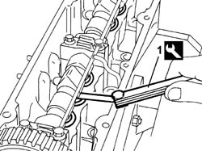
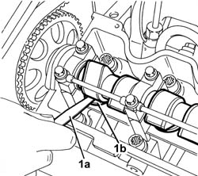
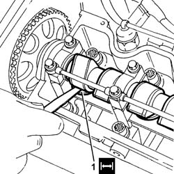

1036H14 valve tappets - check clearance
- Path
- Procedures > 10 ENGINE > 1036 TIMING SYSTEM > 1036H TAPPETS AND ROCKER SHAFTS > 1036H14 valve tappets - check clearance
- Kind
- repair procedure (removal / refitting; the operation number is the code)
- Applies to
- engines: 1.2 8v, 1.4 8v, 1.9 JTD 8V, 1.9 DIESEL; all production periods
- Interactive page
- https://sloeber94.github.io/elrnDB-fDbl/en/#/2584216
Applies to: engines: 1.2 8v; all production periods
Op. 1048A10 AIR FILTER ASSEMBLY - R.R.
Op. 1016A20 SINGLE TAPPET COVER -R.R AND REPLACE GASKET
1. Using a feeler gauge, measure the clearance between the camshaft and a tappet shim.
Rotate the camshaft and check the clearance for all the tappets.
Measurement | Value | ||
|---|---|---|---|
- | Valve clearance in closed position (mm) | Inlet | 0.30 - 0.40 |
Exhaust | 0.40 - 0.50 | ||

Applies to: engines: 1.2 8v; all production periods
Applies to: engines: 1.9 DIESEL; all production periods
Op. 1016A22 CAM COVER WITH FUEL DUCT - R + R AND REPLACE GASKET
1. Using a feeler gauge (1a), measure the clearance (1b) between the camshaft lift and a tappet shim.
Rotate the camshaft and check the clearance for all the tappets.
Measurement | Value | ||
|---|---|---|---|
- | Inlet valve clearance in closed position (mm) | Inlet | 0.25 - 0.35 |
Exhaust | 0.30 - 0.40 | ||

Applies to: engines: 1.9 DIESEL; all production periods
Op. 1016A22 CAM COVER WITH FUEL DUCT - R + R AND REPLACE GASKET
Applies to: engines: 1.9 JTD 8V; all production periods
Proceed with the removal
Op. 1016A26 CAM COVER WITH BUILT IN OIL VAPOUR SEPARATOR - R.R..
Apply a suitable wrench to the toothed timing belt drive pulley to crank the crankshaft and then the camshaft.
1. With the engine cold, use a feeler gauge to check that the valve clearance is within the specified limits with the valves closed.
Measurement | Value | ||
|---|---|---|---|
1 | Valve clearance (mm) | Inlet | 0.25 - 0.35 |
Exhaust | 0.30 - 0.40 | ||

Applies to: engines: 1.9 JTD 8V; all production periods
Repeat the clearance check on all tappets.
Proceed with the refitting
Op. 1016A26 CAM COVER WITH BUILT IN OIL VAPOUR SEPARATOR - R.R..
Applies to: engines: 1.4 8v; all production periods
 Removing
Removing
 Refitting
RefittingOp. 1048A10 AIR FILTER ASSEMBLY - R.R.
Op. 1056B82 INJECTION/IGNITION SYSTEM E.C.U. (ONE) - R + R
Op. 1056B87 IGNITION/INJECTION SYSTEM CONTROL UNIT SUPPORT - R.R.
Op. 5510C14 IGNITION COIL/S - R+R
Op. 1032D26 TIMING SYSTEM FRONT PROTECTIVE COVER (UPPER PART) - R.R.
Op. 1016A20 SINGLE TAPPET COVER -R.R AND REPLACE GASKET
- With the engine cold, use a feeler gauge to check that the valve clearance is within the specified limits with the valves closed.
Subject | Value | |
|---|---|---|
- | Inlet valve clearance in closed position (mm) | 0.3 |
Subject | Value | |
|---|---|---|
- | Exhaust valve clearance in closed position (mm) | 0.4 |
- Rotate the camshaft and check the clearance for all the tappets.
Applies to: engines: 1.4 8v; all production periods
Refitting
RemovingOp. 1016A20 SINGLE TAPPET COVER -R.R AND REPLACE GASKET
Op. 1032D26 TIMING SYSTEM FRONT PROTECTIVE COVER (UPPER PART) - R.R.
Op. 5510C14 IGNITION COIL/S - R+R
Op. 1056B87 IGNITION/INJECTION SYSTEM CONTROL UNIT SUPPORT - R.R.
Topics linked from this page (8)
- 1016A20 single cam cover - r + r and replace gasket
- 1016A22 cam cover with fuel duct - r + r and replace gasket
- 1016A26 cam cover with built in oil vapour separator r r
- 1032D26 TIMING SYSTEM FRONT PROTECTIVE COVER (UPPER PART) - R.R.
- 1048A10 air cleaner filtering element - replace
- 1056B82 injection/ignition system e.c.u. (one) - r + r
- 1056B87 ignition/injection system control unit mount - r r
- 5510C14 ignition coil/s - r+r